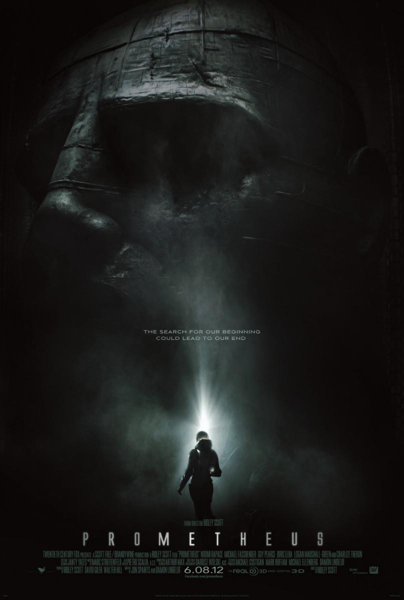

La saga de 'Alien', es una saga cinematográfica de ciencia ficción y terror que relata inicialmente la historia de la teniente Ellen Ripley
(protagonizada por Sigourney Weaver) y su lucha contra una forma de vida alienígena, conocida simplemente como «el alien» o xenomorfo.
La serie comenzó en 1979 con la película de 20th Century Fox 'Alien, el octavo pasajero' y a partir de ésta se produjeron tres secuelas,
al igual que numerosos cómics, libros y videojuegos basados en la franquicia. Relacionadas con la serie están las películas de 'Alien vs. Predator'
(Alien vs. Predator y Alien vs. Predator: Requiem), que se basan en la franquicia que hace la combinación del universo de Alien con el de la saga
cinematográfica de Depredador.
Posteriormente uno de sus creadores Ridley Scoot, llevo la saga a sus inicios añadiendo dos películas más donde se cuenta el origen del xenomorfo.
A demas el futuro traerá una tercera precuela y una serie, así que la saga seguirá creciendo.
La saga alien, tiene la suerte de contar con varios de los directores más influyentes de las últimas décadas, David Fincher, James Cameron o Ridley Scott por
tres veces han rodado alguna de sus partes dotándola de una enorme calidad cinematográfica.
Bajo la producción y distribución de 20th Century Fox, la saga Alien lleva varias décadas conquistándonos a pequeñas dosis de ciencia ficción, terror y
mucho carácter. ¿Quién podría olvidar el mítico «aléjate de ella, puerca»?
Películas, libros, novelas, videojuegos, cómics y hasta un juego de rol. La franquicia ha sabido enamorar pero también envejecer y por ello hemos preparado
este recopilatorio de lo más purista (sin tener en cuenta crossovers) para que siempre tengas a mano los mejores recursos disponibles, en Español.
Sinopsis:
De regreso a la Tierra, la nave de carga Nostromo interrumpe su viaje y despierta a sus siete tripulantes. El ordenador central, MADRE, ha detectado
la misteriosa transmisión de una forma de vida desconocida, procedente de un planeta cercano aparentemente deshabitado. La nave se dirige entonces
al extraño planeta para investigar el origen de la comunicación.
Sinopsis:
Alien es un organismo perfecto, una máquina de matar cuya superioridad física sólo puede competir con su agresividad. La oficial
Ripley y la tripulación de la nave “Nostromo” se habían enfrentado, en el pasado, a esa monstruosa criatura. Y sólo Ripley sobrevivió
a la masacre. Después de vagar por el espacio durante varios años, Ripley fue rescatada. Durante ese tiempo, el planeta de Alien ha sido
colonizado. Pero, de repente, se pierde la comunicación con la colonia y, para investigar los motivos, se envía una expedición de marines
espaciales, capitaneados por Ripley. Allí les esperan miles de espeluznantes criaturas. Alien se ha reproducido y esta vez la lucha es por
la supervivencia de la Humanidad.
Sinopsis:
Tras conseguir escapar con Newt y Bishop de un planeta alienígena, la teniente Ellen Ripley (Sigourney Weaver) recala accidentalmente en Fiorna 161,
una remota cárcel galáctica cuyos peligrosos reclusos están absolutamente abandonados a su suerte.
Sinopsis:
Más de doscientos años después de su muerte, Ripley (Sigourney Weaver) vuelve a la vida gracias al empleo de técnicas avanzadas de clonación. Pero, durante
el proceso, el ADN de Ripley se ha mezclado con el de la Reina Alien, por lo que Ripley empieza a desarrollar ciertas características de la peligrosa alienígena.

Sinopsis:
Finales del siglo XXI. Un grupo de científicos y exploradores emprende un viaje espacial de más de dos años en la nave Prometheus a un remoto planeta recién descubierto,
donde su capacidad física y mental será puesta a prueba. El objetivo de la misión es encontrar respuesta al mayor de los misterios: el origen de la vida en la Tierra.
Sinopsis:
Durante un viaje en el espacio rumbo a un remoto planeta al otro lado de la galaxia para colonizarlo, la tripulación de la nave 'Covenant' descubre una señal proveniente de lo que
creen puede ser un paraíso inexplorado, y que resulta ser un mundo oscuro y hostil... Secuela de "Prometheus" (2012).
Si tienes pensado ponerte manos a la obra con la longeva saga 'Alien' y estas un poco abrumado con el orden exacto con el que se deben visionar las películas, tenemos cubierta tu espalda,
porque en esta web vamos a repasar el orden en el que se supone que se debe seguir la saga por orden cronológico. Así estarás preparado para este universo de xenomorfos, algún que otro
depredador y planetas inhóspitos cargado de acción y terror. ¡Vamos a ello!
También debes tener en cuenta que siempre las puedes ver cómo te apetezca o en el orden en el que se fueron estrenando.
Aun no siendo realmente parte de la saga Alien propiamente dicho, ser complotista y querer ver la saga 'Alien' de cabo a rabo y en orden cronológico nos obliga a arrancar con la duramente
criticada 'Alien vs. Predator' del bueno de Paul W.S. Anderson (‘Horizonte Final’). En esta página somos bastante defensores de este metraje del año 2004, con un presupuesto moderado y con
el regreso de uno de los xenomorfos más recordado de toda la saga.
Con eso el orden cronológico seria:
'Alien vs. Predator'
Ambientación: 2004.
'Alien vs. Predator 2'
Ambientación: 2004, continuación inmediata de pelicula anterior.
'Prometheus'
Ambientación: Finales siglo XXI.
'Alien: Covenant'
Ambientación: 11 años despues de Prometheus.
'Alien, el octavo pasajero'
Ambientación: año 2112 (18 años despues de covenant).
'Aliens: El regreso'
Ambientación: año 2179 (57 años despues de Alien).
'Alien³'
Ambientación: año 2179, inmediatamente despues de Aliens.
'Alien: Resurrección'
Ambientación: año 2381, 202 años después del final de 'Alien³'.